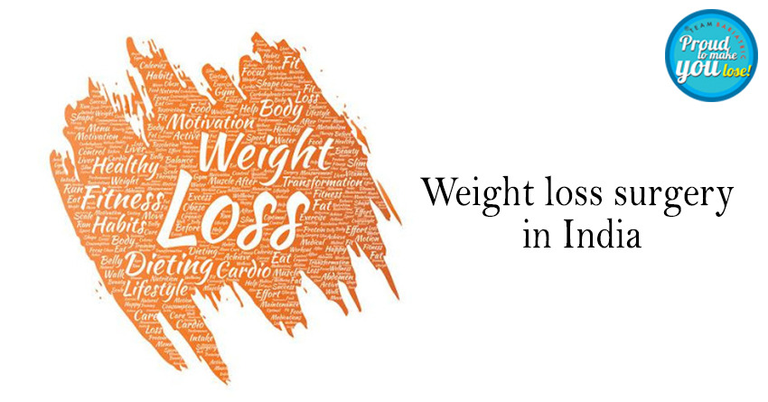

In today’s world, weight loss has become a top priority for many people, but achieving lasting results is often more difficult than expected. Weight loss surgery, or bariatric surgery, has emerged as a highly effective solution for individuals struggling with severe obesity. But the real question remains: Is weight loss surgery effective?
As the Best Bariatric Surgeon in Delhi, I’ve had the privilege of guiding numerous patients through their weight loss journey. Through my years of experience, I’ve seen firsthand how life-changing these procedures can be. Weight loss surgery is not just about shedding pounds; it’s about regaining health, improving quality of life, and, most importantly, gaining confidence in oneself.
But is it right for you? Let's break it down.
What is Weight Loss Surgery?
Weight loss surgery involves surgical procedures that help people lose weight by making changes to their digestive system. There are different types of bariatric surgery, but the common goal is to help individuals who have been unable to lose weight through diet, exercise, and other methods.
Bariatric surgery is typically recommended for individuals who are severely obese or morbidly obese, which is defined by a Body Mass Index (BMI) of over 37.5. Here’s a simple breakdown of the BMI chart for easier understanding:
- Normal: 18 - 22.4
- Overweight: 22.5 - 27.4
- Obese: 27.5 - 37.4
- Morbidly Obese: Over 37.5
If your BMI falls into the higher categories, especially morbid obesity, and you’ve struggled with weight loss despite various efforts, bariatric surgery might be a viable option.
Understanding the Effectiveness of Bariatric Surgery
As the Best Bariatric Surgeon in Delhi, I often get asked if weight loss surgery is truly effective. The simple answer is yes, but let me dive deeper into why.
- Significant Weight Loss
For many patients, bariatric surgery leads to a significant reduction in body weight. While results vary from person to person, it’s not uncommon for patients to lose 50% to 70% of their excess weight (more than the ideal body weight) in the first year after surgery. This drastic change often leads to a reduction in obesity-related health problems, such as high blood pressure, diabetes, sleep apnea, and joint pain. - Improved Health Conditions
Many patients who undergo bariatric surgery experience a dramatic improvement in their health. For example, Type 2 diabetes, a condition closely linked to obesity, can go into remission in a significant number of cases. High blood pressure and high cholesterol levels also tend to improve post-surgery. This is why bariatric surgery is not just about looking good—it’s about feeling better and leading a healthier life. - Psychological Benefits
Let’s not forget the psychological benefits. Weight loss surgery has helped many people regain their confidence and self-esteem. It allows individuals to engage in activities they once thought were impossible due to their weight, like hiking, traveling, or simply playing with their children. The emotional and mental transformation is often just as powerful as the physical one.
The Process: What You Need to Know
If you’re considering weight loss surgery, there’s more to it than just going into the operating room. Here’s what you can expect:
- Initial Consultation and Evaluation
The journey begins with a consultation with me as the Best Bariatric Surgeon in Delhi. We’ll discuss your medical history, your current health condition, and your weight loss goals. We’ll also assess your BMI and overall fitness to determine if you’re a good candidate for surgery. It’s important to remember that weight loss surgery is not a quick fix but a commitment to lifelong change. - Preparing for Surgery
Once we decide together that bariatric surgery is the right path for you, the preparation process begins. This includes dietary changes, exercise, and possibly meeting with a nutritionist or psychologist to ensure you’re mentally and physically ready. Bariatric surgery requires a significant commitment to a healthier lifestyle after the procedure. - The Surgery
The procedure itself can vary depending on the type of surgery you undergo, but it generally involves making changes to your stomach to restrict the amount of food you can eat. As a result, you’ll feel full with much smaller portions. While the surgery itself is minimally invasive in most cases, it’s important to follow post-surgery instructions carefully to ensure a smooth recovery. - Post-Surgery Care
After the surgery, you’ll need to make significant lifestyle changes. This includes eating smaller, more frequent meals, engaging in regular physical activity, and getting the right nutrients. The goal is not just to lose weight, but to maintain that weight loss over the long term.
Is Weight Loss Surgery the Right Choice for You?
It’s crucial to remember that weight loss surgery is not a one-size-fits-all solution. As the Best Bariatric Surgeon in Delhi, I ensure that my patients fully understand the potential risks and benefits before making any decisions. Weight loss surgery is a tool, not a guarantee, and the long-term success depends on how committed you are to changing your habits and lifestyle.
If you’ve tried traditional methods of weight loss with no success, and your BMI falls into the obesity or morbidly obese categories, surgery may be a great option. However, surgery isn’t a magic bullet; it requires hard work, dedication, and ongoing support.
How to Maximize the Success of Weight Loss Surgery
To make the most of your weight loss surgery, here are a few key tips:
- Commit to a Healthy Diet
While the surgery restricts the amount of food you can eat, it’s still essential to focus on a balanced, healthy diet. The surgery is not a pass to eat unhealthy foods; in fact, it’s even more important to fuel your body with nutrient-rich, wholesome foods to support your health and energy levels. - Exercise Regularly
Exercise is crucial for maintaining weight loss and improving overall health. After surgery, you’ll be able to engage in physical activities that were previously challenging. Start slow and gradually increase your activity level to strengthen your body and keep your weight under control. - Follow-Up Appointments
Regular follow-up appointments with your Best Bariatric Surgeon in Delhi are essential for monitoring your progress and addressing any concerns. These check-ins will help ensure that you stay on track and receive the ongoing support you need. - Mental Health Support
In many cases, weight loss surgery leads to a significant change in body image, which can have psychological effects. Seeking mental health support, either through counseling or support groups, can be incredibly helpful in navigating the emotional and psychological aspects of this transformation.
Summary
Yes, weight loss surgery can be incredibly effective, especially for those who are morbidly obese and have struggled with weight loss for years. As the Best Bariatric Surgeon in Delhi, I’ve seen countless patients experience life-changing results. The surgery helps not only with weight loss but also with improving overall health, boosting confidence, and leading a more active life.
However, it’s essential to approach bariatric surgery with the right mindset and commitment. It’s a tool that requires significant lifestyle changes and ongoing effort. But for those who are ready, the rewards are well worth the investment.
If you’re considering weight loss surgery, I encourage you to reach out and schedule a consultation. Together, we’ll determine if bariatric surgery is the right step for you, and I’ll guide you through the process every step of the way. Your journey to better health starts here.
Back to Blog